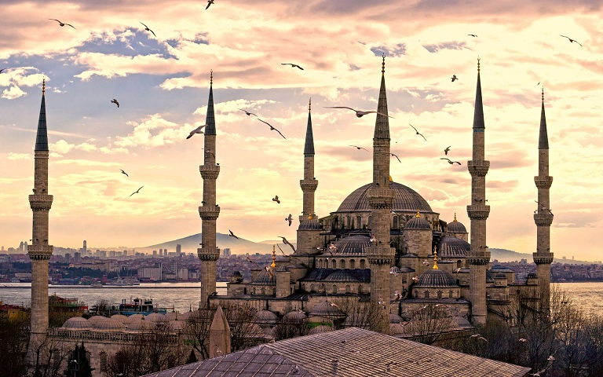

Emirgan Korusu+90 212 277 5782Emirgan Mah., 34467 Emirgan/İstanbul, Türkiye |
Emirgân Korusu, Istanbul'da Sariyer ilçesi'nde yer alan bir korudur. Istanbul Bogazi kiyilarinda, Emirgân-Istinye semtleri arasinda yer alir. Istanbul Bogazi kiyisinda, 47.2 hektarlik bir alanda sirtlar ve yamaçlar üstüne yayilmistir. Çevresi yüksek duvarlarla çevrilmis durumdadir. Koru, 17. yüzyilda Osmanli padisahi IV. Murad tarafindan Iranli Emir Güne Han'a armagan edilmistir. Daha önce Feridun Bahçeleri olarak anilan bölge bundan sonra Emirgân Korusu olarak anilmaya baslanmistir. Yüzyillar boyunca pek çok kez el degistirmis, 19. yüzyilda Osmanli Padisahi Abdülaziz tarafindan Misir Hidivi Ismail Pasa'ya verilmistir. 1871-1878 yillari arasinda koru içinde 3 kösk yaptirilmistir. Günümüze de ulasan bu köskler Sari Kösk, Pembe Kösk ve Beyaz Kösk olarak adlandirilmaktadir. 1940 yilinda dönemin Istanbul belediye baskani Lütfi Kirdar'in girisimiyle kamulastirilip park olarak düzenlenerek halka açilmistir. 2006 yilindan itibaren her yil nisan ayinda Lâle Festivali düzenlenmektedir.
 | Gülhane Parkıİstanbul, Cankurtaran Mh., 34122 Fatih/İstanbul, Türkiye |
Gülhane Parki, Istanbul'un Fatih ilçesinin Eminönü semtinde yer alan tarihî bir parktir. Alay Köskü, Topkapi Sarayi ve Sarayburnu arasinda yer alir.
İstiklal CaddesiBeyoğlu, İstanbul, Türkiye |
Istiklâl Caddesi, (Osmanlica: (1927'den önce) Cadde-i Kebir, Büyük Cadde, Fransizca: Grande Rue de Péra), Istanbul'un en eski semtlerinden biri olan Beyoglu'nda Tünel ile Taksim Meydani arasinda uzanan ve 19. yüzyilin sonlarindan beri Türkiye'nin en ünlü caddelerinden biri olma vasfini koruyan cadde. 1.400 metre uzunlugundaki caddenin [1] orta noktasi Galatasaray Lisesi'nin yanindan geçen Yeniçarsi Caddesi'nin caddeyi kestigi ve 50. Yil Aniti'nin bulundugu yer kabul edilir. Paralelinde uzanan Tarlabasi Bulvariyla beraber Beyoglu ilçesinin ana eksenini olusturur. Ortalama olarak 74 metre yükseklikte yer alan Istiklal Caddesi idari olarak 9 ayri mahalleyi kapsar.
 | Kız Kulesi+90 216 342 4747Üsküdar Salacak Mevkii, 34668 Üsküdar/İstanbul, Türkiye |
Kiz Kulesi, hakkinda çesitli rivayetler anlatilan, efsanelere konu olan, Istanbul Bogazi'nin Marmara Denizi'ne yakin kisminda, Salacak açiklarinda yer alan küçük adacik üzerinde insa edilmis yapidir.
 | OrtaköyBeşiktaş,İstanbul |
Ortaköy, Bogaziçi'nin Avrupa yakasinda, Besiktas ilçesine bagli mahalle ve semt. Ortaköy ve Mecidiye mahallelerinden olusan Ortaköy semti, sahile açilan vadi boyunca yamaçlara kurulmus bir yerlesmedir. Kuruçesme, Ulus, Levazim, Balmumcu ve Yildiz mahalleriyle çevrili olan semtin kuzey siniri Defterdarburnu'dur. Ortaköy Camii semtin sembolüdür.
Piyer Loti Tepesi+90 212 497 1313İstanbul, Eyüp Merkez, 34050 Eyüp/İstanbul, Türkiye |
Pierre Loti Tepesi, Istanbul'un Eyüp ilçesinde Haliç'e nazir bir tepedir. Tepe adini, 1876 yilinda Istanbul'a gelerek buraya yerlesen ve sik sik bu tepedeki bir kiraathaneye gelmesiyle taninan Fransiz roman yazari ve dogubilimci Julien Viaud'dan almistir. Tepenin adini Eyüpsultan Tepesi olarak degistirmek amaciyla belediye meclisine sunulan öneri pek çok çevreden büyük itirazlar görmüs ve belediye meclisince reddedilmistir. Tepe ve burada bulunan ayni adli çay bahçesi Istanbul'a gelen turistlerin de sik sik ziyaret ettigi bir yerdir. Tepeye ulasim Eyüp-Piyerloti teleferigi üzerinden de mümkündür.
|  | SultanahmetFatih/İstanbul |